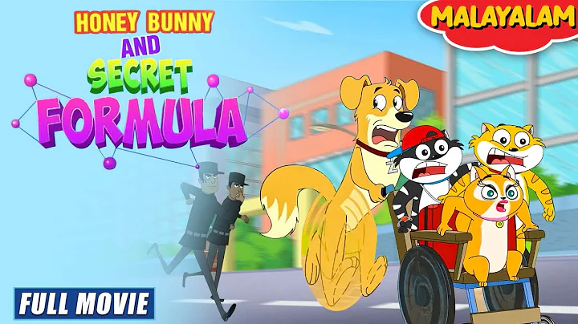

ബഹിരാകാശ സാഹസികത | Honey Bunny Ka Jholmaal | Full Episode In Malayalam | Videos For Kids | HB
Sony YAY! Malayalam
750k views.2 months ago
GX Series 3000-30000W High-power Bus Sheet Fiber Laser Cutting Machine.
ബഹിരാകാശ സാഹസികത | Honey Bunny Ka Jholmaal | Full Episode In Malayalam | Videos For Kids | HB
Sony YAY! Malayalam
750k views.2 months ago